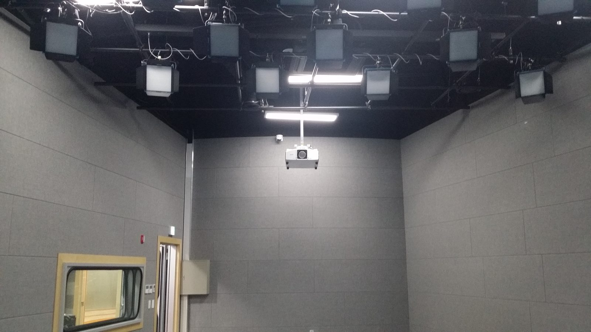
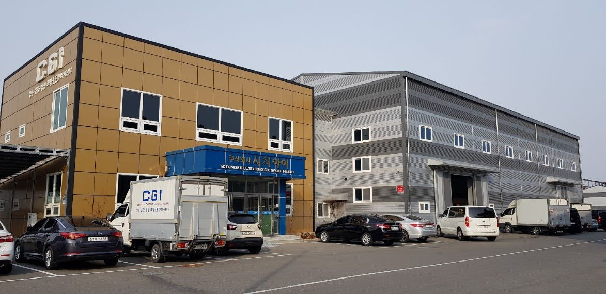
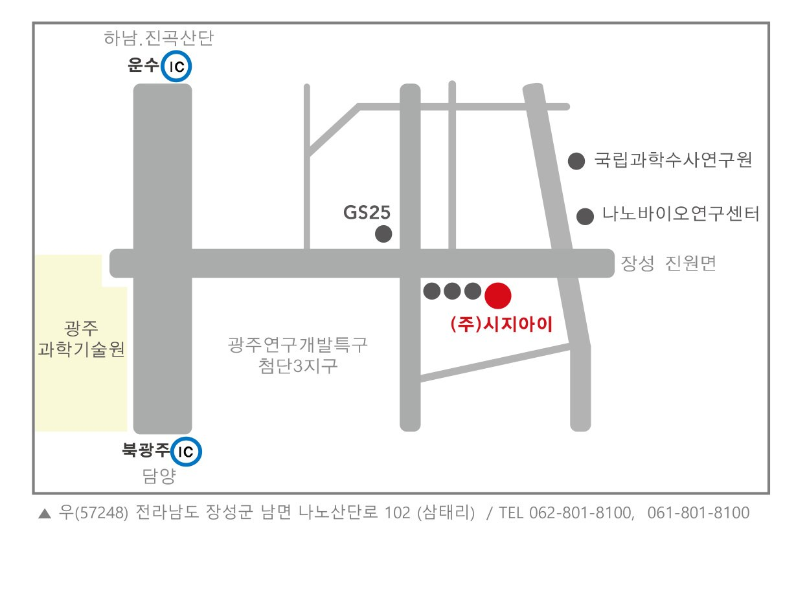
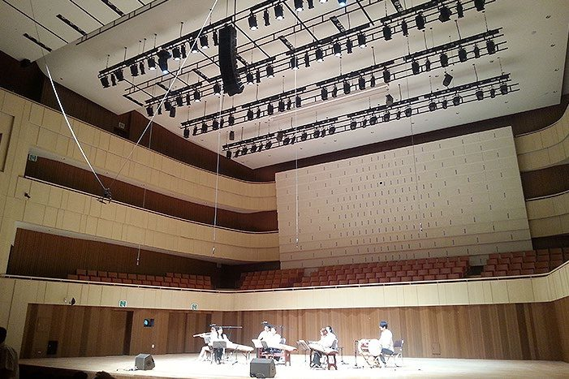
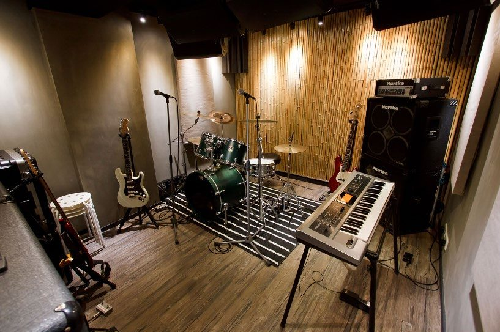
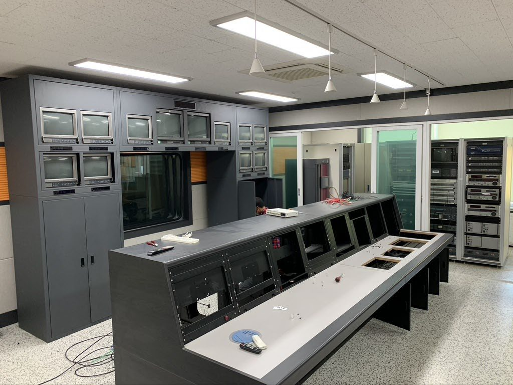
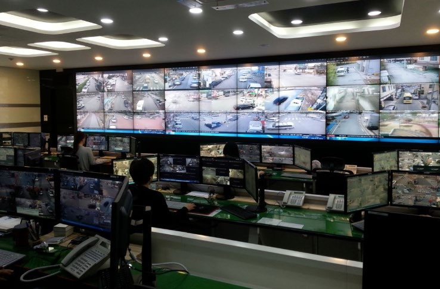
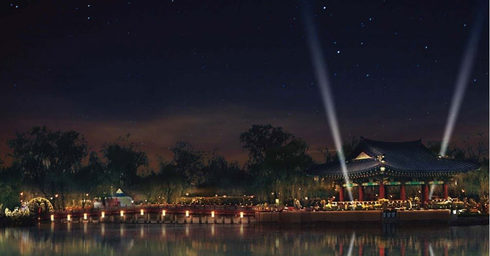
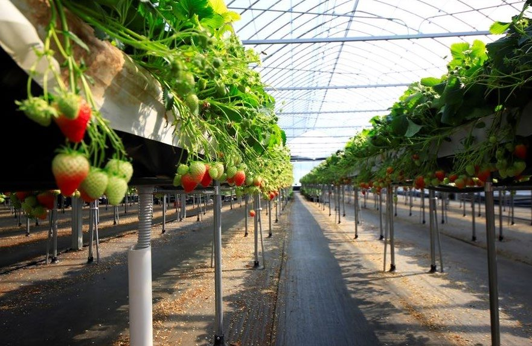

Media · Sound · Lighting · Control · Smart Farm
방송, 음향의 모든것!
고객을 위한 한 걸음!
We express the Creation of God through industry
㈜시지아이는 2011년 설립된 영상장비·음향장비 및 각종 설계·시공·제작 전문업체입니다. 통합방송·음향·영상·CCTV·LED전광판·무대조명부터 관제시스템과 스마트팜, 공연렌탈과 각종 유지보수까지 하나의 흐름으로 설계하고 시공합니다.
ABOUT
회사 소개 · 주요연혁 · 오시는길
인사말 GREETINGS
㈜CGI는 영상장비 및 음향장비(SR, PA, A/V, CCTV, 화상회의 시스템) 등 전문음향·영상기기 전문 설계·제조·시공업체입니다. 전문 공연 시설이나 방송국, 교회, 경기장, 실내체육관, 학교 등 음향기기·방송기기·CCTV 등 고객 맞춤형 설계를 적용하여, 높은 수준의 음향·영상기술이 필요한 다양한 장소의 깊은 기술적 요구를 충족할 수 있는 노하우와 기술력을 보유하고 있습니다.
광범위한 노하우와 뛰어난 기술력으로 최상의 서비스를 제공하며, 제품은 실생활에 적용되도록 개발하고 최고 품질의 제품과 최상의 서비스에 전력을 기울여 글로벌 리더가 되도록 노력하겠습니다.
대표이사 김범신

회사 개요 COMPANY OVERVIEW
- 회사명
- 주식회사 시지아이 (CGI Inc.)
- 대표이사
- 김범신, 백정아
- 설립
- 2011년 1월
- 직원 수
- 6명
- 사업자등록번호
- 410-86-46283
- 주요사업
- 통합방송, 음향, 영상, CCTV, LED전광판, 무대조명, 기계장치, 공연렌탈, 실내조명, 관제시스템, 스마트팜, 각종 유지보수
- 업종
- 음향기기·방송기기 제조 / 도·소매업, 조명기구, 전기공사, 소프트웨어 제작
- 본사
- [57248] 전라남도 장성군 남면 나노산단로 102 (삼태리)
- 연락처
- TEL 062) 576-8100 · 061) 801-8100 · FAX 062) 576-8181
조직도 ORGANIZATION
조직도 전체 보기
대표이사
주요연혁 HISTORY
전체 연혁 보기 (2011~2025)
오시는길 LOCATION

- 본사[57248] 전라남도 장성군 남면 나노산단로 102 (삼태리)
- TEL062) 576-8100 · 061) 801-8100
- FAX062) 576-8181
- 블로그blog.naver.com/cgiinc
주변 기준지 나노바이오연구센터 인근 · 국립과학수사연구원 인근 · 광주연구개발특구 첨단3지구 · 윤수IC(하남·진곡산단) · 북광주IC(담양)
2017년 장성공장 준공·가동과 장성지점 사업개시 이후 2019년 본·지점 합병 및 본점 이전으로 현재 본사는 전라남도 장성군입니다. 지도 링크는 도로명주소 검색 결과이며, 정확한 진입 위치는 방문 전 전화로 확인해 주세요.
영업·견적 문의는 위 연락처로 부탁드립니다.
BUSINESS
주요 사업 분야
독보적인 기술의 적용으로 다양한 공간에 있어서 최적화된 사용자 환경을 구축합니다.
PRODUCTS
취급 브랜드 · 제품 보기
CGI는 하이엔드급 음향·영상 기기를 취급하며, 아래 브랜드별 제품 목록과 상세 정보는 CGI 상품 쇼핑몰에서 확인하실 수 있습니다.
해당 이름과 일치하는 브랜드가 없습니다. 검색어를 지우고 전체 목록을 보세요.
브랜드 목록은 취급 기준입니다.
대리점 · 공급 계약 AGENCIES
REFERENCE
시공 레퍼런스 · 납품·설치 실적 · 유지보수






교회 · 공연장 · 방송국 · 전시공간에 음향·영상·조명·LED 시스템을 설계·시공했습니다. 아래는 대표 시공 사례와 설치 사양입니다.
2009년부터 2025년까지 납품·설치공사 실적입니다.
유지보수 계약은 음향·영상·조명·관제·스마트팜 전반을 대상으로 하며, 진행 중인 건은 아래와 같습니다.
등록 · 인증 · 산업재산권 CREDENTIALS
SUPPORT
문의 · FAQ · Q&A
CONTACT 문의 안내
- TEL062) 576-8100 · 061) 801-8100
- FAX062) 576-8181
- 본사[57248] 전라남도 장성군 남면 나노산단로 102 (삼태리)
- 블로그blog.naver.com/cgiinc
견적·시공·렌탈 문의는 위 연락처로 접수 받고 있습니다. CGI 상품 쇼핑몰에서 회원 가입 후 견적 요청과 주문을 이용하실 수 있습니다.
FAQ 자주 묻는 질문
시공 상담은 어떻게 하나요?
전화 또는 메일로 장소 개요(평수, 용도, 예산 등)를 알려주시면 1차 상담 후 현장 실측을 진행합니다.
렌탈은 어떤 경우에 이용하나요?
행사·축제·방송 등 단발성 행사에 방송·음향·조명 장비를 단기간 임차로 제공하며, 설치·운용·철거까지 지원합니다.
음향·영상 기기를 직접 구매할 수 있나요?
CGI 상품 쇼핑몰에서 취급 브랜드의 제품과 공개 가격을 확인하시고, 회원 가입 후 견적 요청·주문을 진행하실 수 있습니다. 재고·배송·최종 판매가는 CGI 확인 후 안내됩니다.
설치 후 유지보수는 어떻게 하나요?
음향·영상·조명 시스템은 무상점검 서비스와 유지보수 계약을 제공하며, 현장 문제에 신속히 대응합니다. 관제시스템과 스마트팜 유지보수도 동일하게 계약할 수 있습니다.